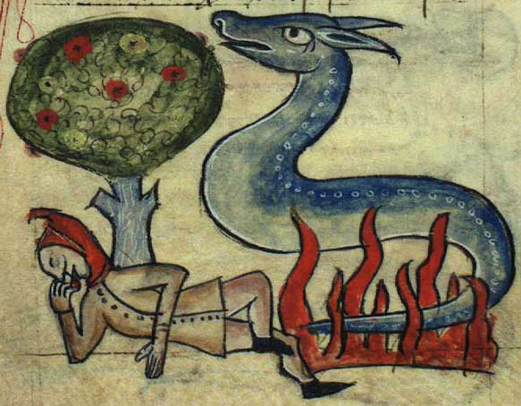
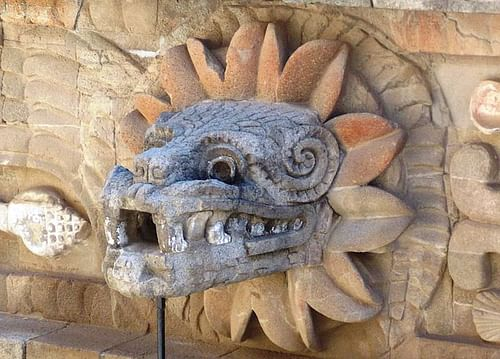

SalamandersOriginThe origin of the Salamander can be found to be based off of real life salamanders, albeit the realistic counterpart to be a lot less intimidating than the mythological one. The salamanders of myth can be seen to have a lizard-like form with an ability to control fire. HeraldryKnown to create and put of fires, the salamanders were very resiliant to hot temperatures as it was one of their signature abilities. Sometimes, salamanders could take on fairy-like humanoid statures. Others would be used to keep furnances burning day-in and day-out. |
 |
QuetzalcoatlOriginThe name "Quetzalcoatl" comes from the Nahuatl word for plumed serpent. It was prevalent in folklore across Mesoamerican culture, and is said in myths to be the ancestor of most mesoamerican people. This dragon is often represented as a god, sometimes of the morning star or death. HeraldryThe Quetzalcoatl is a flying serpent dragon with no wings and feathers along its body. It is often depicted as brightly colored due to its connection to the quetzal bird, which are often green, blue, red, and white. |
 |